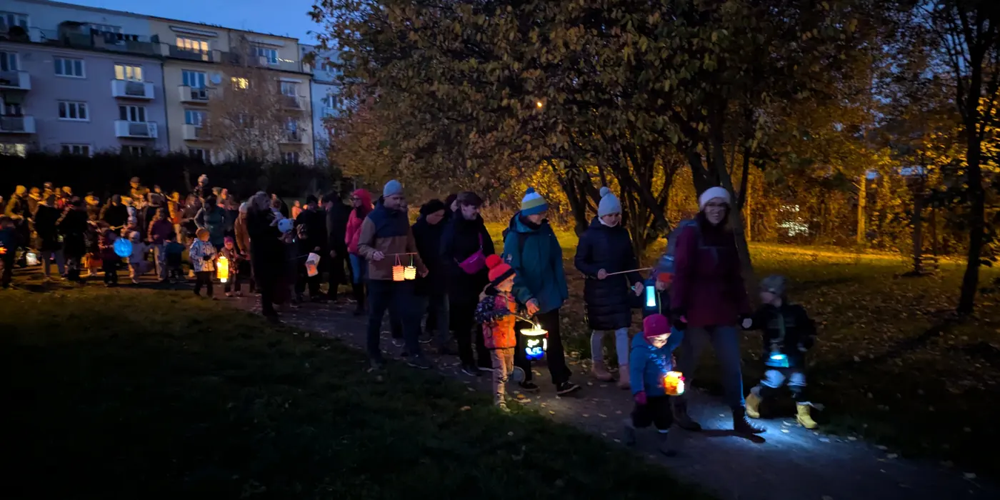

Bořislavský dušičkový průvod s lampiony
ne 8. 11. 2026
17:00–19:00
Sraz: parčík před zimním stadionem Hvězda
Konec: Lidické ořešáky
Rok se s rokem sešel a my opět zveme na tradiční dušičkový lampionový průvod na Bořislavce.
Rozsvítíme společně naše sousedství, aby se duše našich blízkých, kteří již nejsou mezi námi, cestou do našeho světa neztratily a mohly nás v tomto vzpomínkovém čase navštívit.
Společným průvodem dojdeme z parčíku před HC Hvězda až k Lidickým ořešákům. Zde společně vzpomeneme na naše blízké. Na závěr si uděláme sousedský oheň, u kterého navzájem ochutnáme (ideálně doma s láskou a dětmi pečené) dušičky, kosti či jiné dušičkové pečivo, dáme si svařák a zazpíváme si u ohně strašidelné písně s kytarou. Máme se na co těšit!
Program
- 17:00 Sraz v parčíku před zimním stadionem Hvězda
- 17:00–17:15 Přivítání, rozsvěcování lampionů
- 17:15–17:30 Společný průvod k Lidickým ořešákům (tempo dle potřeby)
- 17:30–18:30 Oheň, ochutnávání dušičkového pečiva, svařák a zpěv strašidelných písní
Co s sebou
- Lampion, doporučujeme domácí výroby se svíčkou nebo LED světlem.
- Teplé oblečení a vhodnou obuv (může být bláto).
- Dušičkové pečivo, o které se vzájemně podělíme, a hrnek na svařák.
- Dobrovolně: kytaru či jiný hudební nástroj na strašidelné písně (Jožin z Bažin, Na kopečku v Africe, Zabili, zabili).